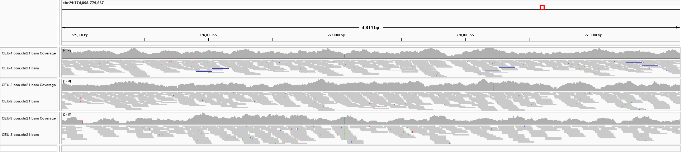

Sequencing protocols, best practice variant calling and filtering
Per Unneberg
NBIS
04-Sep-2023
Data generation
Textbook data is clean
bash: line 1: bcftools: command not found
##fileformat=VCFv4.2
##source=tskit 0.5.5
##FILTER=<ID=PASS,Description="All filters passed">
##contig=<ID=1,length=2000000>
1 8 0 A C . PASS . GT 0|0 0|0 0|0 0|0 0|0 0|0 0|0 0|0 0|0 0|0 0|0 0|0 1|1
1 17 1 T G . PASS . GT 0|0 0|0 0|0 0|0 0|0 0|0 0|0 0|0 0|0 0|0 0|0 1|1 0|0
1 21 2 T A . PASS . GT 1|1 1|1 1|1 1|1 1|1 1|1 1|1 1|1 1|1 1|1 0|0 0|0 0|0
1 28 3 G A . PASS . GT 0|0 0|0 0|0 0|0 0|0 0|0 0|0 0|0 0|0 0|0 1|1 0|0 0|0
1 29 4 A T . PASS . GT 1|1 1|1 1|1 1|1 1|1 1|1 1|1 1|1 1|1 1|1 1|1 0|0 1|1
FIXME: Include McDonald-Kreitman ADH alignment
Variant calls need to be generated from sequencing data and need to be filtered and preprocessed before any subsequent analyses. There are many possible reasons, including:
uneven mapping
incomplete reference
Real data

Aligments of three samples to chromosome 21
Population genomics - the data
Since the goal of population genomics is to analyze variation in a set of individuals, data generation consists of compiling variation data from individuals. Here the focus is on next-generation sequencing data.
1%-10% for some analyses (PCA/admixture/LD/\(\mathsf{F_{ST}}\)
Restricting analysis to a predefined site list
List of global SNPs
Use global call set for analyses requiring shared sites
Gentotype likelihoods
Bibliography
Li, H. (2014). Toward better understanding of artifacts in variant calling from high-coverage samples. Bioinformatics, 30(20), 2843–2851. https://doi.org/10.1093/bioinformatics/btu356
Lou, R. N., Jacobs, A., Wilder, A. P., & Therkildsen, N. O. (2021). A beginner’s guide to low-coverage whole genome sequencing for population genomics. Molecular Ecology, 30(23), 5966–5993. https://doi.org/10.1111/mec.16077
Talla, V., Soler, L., Kawakami, T., Dincă, V., Vila, R., Friberg, M., Wiklund, C., & Backström, N. (2019). Dissecting the Effects of Selection and Mutation on Genetic Diversity in Three Wood White (Leptidea) Butterfly Species. Genome Biology and Evolution, 11(10), 2875–2886. https://doi.org/10.1093/gbe/evz212